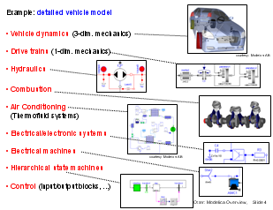
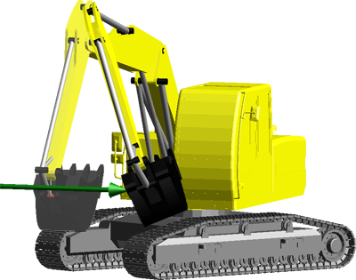
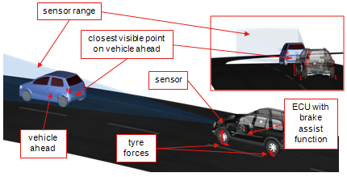
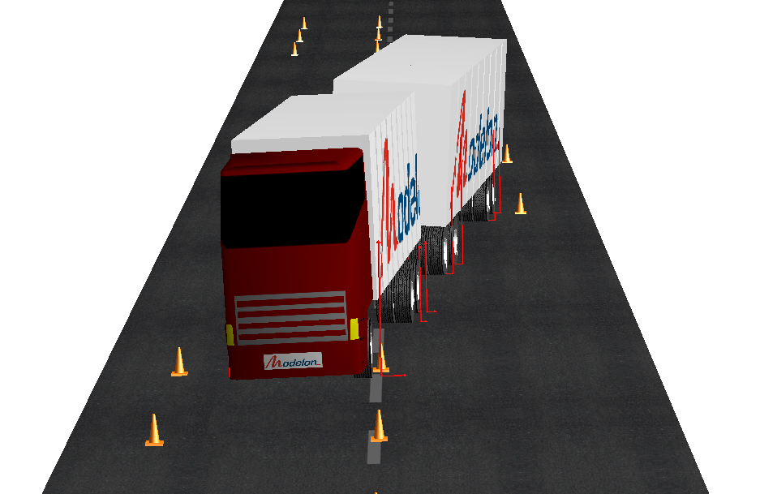
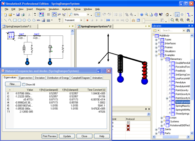

Modelica Newsletter 2009-2 (July 2009)
Table of Contents
- News from the Modelica Association
- Letter from the Board
- Modelica Specification 3.1 released
- 7th International Modelica Conference
- 3rd International Workshop EOOLT'2009
- Education Workshop + Modelica Teaching Material
- Modelica License 2
- News from Modelica library developers
- Modelica Libraries distributed by BAUSCH-GALL
- FlexBody Library from Claytex Services
- VehicleDynamics with active safety and hybrid cars
- News from Modelica tool vendors
Letter from the Board
Dear Modelica Interested,
in this second newsletter, the most important information from the Modelica Association and the Modelica community is summarized for the exciting first half year in 2009:
- After 20 months of development the new version 3.1 of the Modelica language has been released at end of May 2009, see below. New language elements have been verified by prototype implementations (mostly in Dymola) and by their usage in new, free Modelica libraries that are under development.
- After 18 months, a new Modelica Conference will take place at Lake Como in northern Italy (see below). There will be about 25% more papers as on the last Modelica conference and also the tool presentations in the tool session increases to eight Modelica tools. This is accomplished due to the increased number of submitted papers and by moving the Modelica tutorials to Sunday (previously they have been on Monday morning).
- Directly after the Modelica Conference, the one day workshop on "Equation Based Object-Oriented Languages and Tools", EOOLT'2009, takes place at the same location as the Modelica Conference (see below). This workshop is dedicated for computer scientists working on equation based languages. The co-location of Modelica Conference and EOOLT workshop is only performed this time. In the future, the EOOLT workshop is planned to be between two Modelica Conferences, as it was done in the past.
- In April, the "Modelica for Education" Workshop took place in Berlin. As an outcome of this workshop, the Modelica Association is organizing open source teaching material for Modelica courses (see below).
- In this newsletter a new section is started about "Modelica Libraries" provided
by the Modelica community:
- FlexBody, a new library for flexible bodies to import finite element models from Nastran and Genesis, was developed and is distributed by Claytex (see below).
- The VehicleDynamics library from Modelon is considerably enhanced for active safety components and for hybrid vehicles (see below).
- BAUSCH-GALL GmbH (the former Dymola distributor in Germany) offers marketing and distribution of commercial Modelica libraries for all Modelica tools, see below. This might be especially interesting for Universities, research organizations and small companies that want to sell their modeling know-how in form of Modelica libraries with a minimum amount of administrative and legal effort. BAUSCH-GALL starts with three libraries (Belts, FlexibleBodies, HumanComfort), and plans to considerably enlarge this library portfolio in the next years.
- Since end of June, Modelica is available in CATIA Systems (V6R2010), see below. This is a big step since for the first time simulation of the dynamic behavior of multi-domain systems is fully integrated in to the product life cycle management system of a world leader in this area. This will give completely new opportunities for industry.
- The new british company deltatheta offers a Modelica Software Development Kit, i.e., an application programming interface to operate on Modelica models and libraries (see below). This will offer new possibilities for the integration of Modelica in other environments.
- The new version Dymola 7.2 provides support for the new streams concept introduced in Modelica 3.1 and therefore supports also the free Modelica_Fluid library to reliably model fluid systems in Modelica (see below)
- SimlationX 3.2 is the second Modelica tool that supports the whole Modelica language (3.0) and in particular the MultiBody sublibrary from the Modelica Standard Library. Also the new streams concept from Modelica 3.1 is supported, and therefore the free Modelica_Fluid library can be utilized (see below). These are very good news for the Modelica community since tool alternatives make the Modelica market even more interesting for organizations that do not want to lock their models to one vendor.
- The Modelon company is expanding from Sweden to Germany, see below. These are very good news for the Dymola users in Germany, because Modelon is now a Dymola reseller in Germany that additionally provides engineering services with experienced Modelica specialists, especially in the fluid and automotive area.
In case you have some interesting news for the Modelica community, feel free to write a short article in plain html (and eventually png or jpg images) and send it to the newsletter editor (Michael Tiller) for possible inclusion in the next newsletter. The deadline for articles for the next newsletter is October 1, 2009.
Best wishes from the Board of the Modelica Association:
Martin Otter, Chairman (DLR Germany)
Peter Fritzson, Vice-Chairman (Linköping University, Sweden)
Michael Tiller, Secretary (Emmeskay, U.S.A.)
Hilding Elmqvist, Treasurer (Dynasim AB, Sweden)
Modelica Specification 3.1 Released
The new version 3.1 of the Modelica language was released on May 27, 2009. The specification document is available here in pdf format. This release is backward compatible to the previous 3.0 release (with tiny exceptions such as the new "stream" keyword). The essential changes with respect to 3.0 are:
- Stream variables
The two basic variable types in a connector – "potential" (or across) variable and "flow" (or through) variable – are not sufficient to describe in a numerically sound way the bi-directional flow of matter, since specific quantities are determined from the upstream side of the flow, and then Boolean iteration variables for the flow direction are present in equation systems. This fundamental problem is addressed in Modelica 3.1 by introducing a third type of connector variable, called stream variable, declared with the prefix stream. A detailed derivation and explanation is given in Appendix D of the Modelica 3.1 specification document and here (PowerPoint slides). A new Modelica library with stream variables is available as Modelica_Fluid. This library will be included in the next version 3.1 of the Modelica Standard Library. - Mapping of Models to Execution Environments
New language elements are introduced to define the partitioning of models in parts and mapping these parts to tasks and sub-tasks on target machines. This allows a convenient definition of, e.g., Model-in-the-Loop, Software-in-the-Loop, Hardware-in-the-Loop Simulation, or production code for a target machine, from the same logical system architecture, by inheriting from the model that represents the logical system architecture and by setting configuration options. To support this concept, a free library Modelica_EmbeddedSystems is currently under development to provide a convenient user interface to the newly introduced (low level) language elements. One fundamental difference to other approaches in the embedded systems area is that the model partitioning is not defined by a block hierarchy, but by just marking the boundaries of the parts. This allows a more flexible and more convenient definition. It is planned to extend this concept in future releases. - Operator overloading
Overloading of operators like "+" or "*" is defined to allow convenient usage of user-defined data structures like complex numbers, polynomials, or transfer functions. One fundamental difference to operator overloading in other languages is that only scalar operations for one data type need to be overloaded. All other needed operations, like operations between different data types or on arrays of the new data type, can be automatically constructed by the Modelica tool. Therefore, the typical "explosion" of the number of overloaded functions does not occur here. This is a first step and more features might be introduced later, based on the gained experience. To allow future refinements while minimizing the risk that semantics of existing models are changed, the design is conservative and restrictive. This is reached by basing the overloading on disjoint sets of matching functions and not on a priority match as it is often done in other languages. - Improved buses
The usage of expandable connectors (which are usually used to model signal buses) is considerably improved: (a) There is much better support for arrays. (b) All potential bus variables can be included in the bus. The semantics is that only bus variables that are referenced in a model are utilized during code generation. - Improved resource handling
Modelica specific URIs (Uniform Resource Identifier) can be used for links in html-documentation and for the Bitmap annotation. Example: The file name of an image might be given as "Modelica://Modelica.Mechanics/Images/body.png". The meaning is that image "body.png" shall be used that is stored in the directory of package Modelica.Mechanics under directory "Images". This allows to store resources in a package on persistent storage, like a file or a data base system, and to reference resources via package and resource names. It is planned that in a future release of Modelica, all types of resources, including maps, tables, and object libraries, can be referenced in this way. - Various minor improvements and fixes of defects
- New annotation connectorSizing to automatically enlarge a vector of connectors and connect to a free element of this vector when a connection line is drawn (enhances considerably the user convenience in Modelica.StateGraph and Modelica.Fluid).
- Annotation inverse to define inverses of functions (will be used in Modelica.Media and Modelica.Fluid).
- Annotations versionDate, versionBuild, dateModified, revisionId to improve version handling.
- The order of classes stored in separate files can be given (so loading a package from a file system preserves the previously defined order of classes).
- A restriction of balanced models with regards to modifiers on connectors and records was removed (this allows a much simper implementation of the support connector of the Rotational and Translational libraries).
- and more ...
This article is provided by Martin Otter (DLR-RM).
7th International Modelica Conference, Sept. 20-22, 2009 (Como, Italy)

The Modelica Association and Politecnico di Milano organize the 7th International Modelica conference, to be held at Grand Hotel di Como, Como, Italy, on 20-22 September 2009.
The conference will cover all the relevant Modelica topics: language design, numerical and symbolic methods, reusable model libraries, software tools, scientific and industrial applications. On Sunday (Sept. 20) afternoon, five (free) tutorials on Modelica related topics are given in parallel.
Overall, 116 papers have been submitted to the conference, of which 84 were accepted as regular papers, which will be presented in four parallel session tracks, and 20 as poster papers, to be presented in the poster session.
The conference will also include a "Modelica tool" session, as well as an exhibition space for tool vendors and companies offering Modelica-related products and services. This year is a boom time for Modelica tools, as we expect eight tools with Modelica parsing capabilities to be presented in the tool session, so there will be exciting news for the Modelica community. Thirteen exhibitors are also expected to present their products and services throughout the conference.
Important dates:
| Final full paper submission: | August 23, 2009 |
| Conference tutorials: | September 20, 2009 |
| Main conference event: | September 21-22, 2009 |
Further information
For further and up-to-date information about the Conference, please check http://www.modelica.org/events/modelica2009/
This article is provided by Francesco Casella (Politecnico di Milano).
3rd International Workshop EOOLT, Sept. 23, 2009 (Como, Italy)
Directly after the Modelica'2009 conference, the one day workshop on Equation Based Object-Oriented Languages and Tools, EOOLT'2009, takes place at the same location at Grand Hotel di Como, Como, Italy, on September 23, 2009.
The EOOLT Workshop addresses the current state of the art of equation based object-oriented modeling languages (such as Modelica, gPROMS, Chi, Verilog-AMS, VHDL-AMS, and SysML) as well as open issues that currently still limit the expression power, correctness, and usefulness of such languages through a set of full-length presentations and forum discussions. Researchers and practitioners are invited to submit full-length research papers (up to 10 pages) for consideration by the program committee.
Important dates:
| Submission deadline: | August 2, 2009 |
| Author notification: | August 24, 2009 |
| Camera-ready paper submission: | September 11, 2009 |
| Workshop: | September 23, 2009 |
Further information
For further and up-to-date information about the EOOLT workshop, please check http://www.eoolt.org/2009
This article is provided by Peter Fritzson (PELAB).
Education Workshop + Teaching Material
On April 2nd, 2009 the Workshop on "Modelica for Education" took place at the Technische Universität Berlin, Germany.
At the workshop seven presentations were given on the topics such as how Modelica is currently taught, student projects with Modelica real-time applications, and Modelica teaching requirements for industrial product development. The presentations are available for download on the Workshop on Modelica for Education page.
The closing discussion was about how teaching of Modelica can be improved in the future and how the various institutions can share their efforts in an easy way.

We thank all participants and presenters from Germany, Norway, Sweden, Switzerland,
and U.S.A. for an interesting and productive workshop.
As a first outcome of the discussion at the workshop, the Modelica Association has started a new web page www.modelica.org/education that shall collect material to help lecturers to teach Modelica at Universities and in industry.
The page contains a list of Modelica lecturers together with information about their course and contact data. Furthermore, it is planned to provide open source Modelica course and exercise material here in various languages (such as PowerPoint slides and Modelica exercise models). The goal is that lecturers can directly use this material in their courses. As a start, two (English) PowerPoint slide sets are provided: (1) Slides that give an overview about Modelica and (2) slides that introduce the new streams concept for modeling of fluid systems together with a detailed rational for this new approach.
If you also give Modelica lectures, please consider to give lecture and contact information on this page. You might also consider to share some of your teaching material with the Modelica community.
This article is provided by Prof. Gühmann, Dietmar Winkler (TU Berlin), and Martin Otter (DLR-RM).
Modelica License 2
The Modelica License 2 has been released at end of last year. It is available from here together with a FAQ (Frequently Asked Questions). This license is now used for all material from the Modelica Association distributed to the public. Especially, version 3.0.1 of the Modelica Standard Library from January 2009 was published under this license. It is recommended that other providers of free Modelica packages license them also under this license. This license was designed with the help of lawyers from different organizations. There are the following reasons why the Modelica Association changes from Modelica License 1.1 to this new license text:
- The rights of licensor and licensee are more clearly defined, especially:
- A Modelica package under Modelica License 2 (Original Work), or part of it, can be used in unmodified form in open source and commercial software. The licensee cannot change the license of the Original Work and it must be provided without fees.
- If a model component is copied out of a Modelica package under Modelica License 2 and is modified in order to adapt it to the needs of the modeler (Derivative Work), then the result can be licensed under any license (including a commercial license). The attribution notices (like author information) of the original component must be kept in the Derivative Work.
- If a Modelica package under Modelica License 2 is modified (besides error fixes, adding vendor specific Modelica annotations, using a subset of the package, or using a binary representation), then the (root-level) name of this package must be changed.
- If an executable is constructed from a Modelica package under Modelica License 2, then this executable can be licensed under any license (including a commercial license).
- There are several new provisions that shall make law suites against licensors and licensees more unlikely (so the small risk is further reduced).
The Modelica Association hopes that this compromise between open source contributors, commercial Modelica environments and Modelica users will motivate even more people to provide their Modelica packages freely under the Modelica License 2.
This article is provided by Martin Otter (DLR-RM).
News from Modelica library developers
Modelica Libraries distributed by BAUSCH-GALL

BAUSCH-GALL GmbH has started with the (world-wide) distribution of commercial Modelica libraries. Currently, these are:
- Belts Library (from Frank Rettig):
This library provides models for the static and dynamic analysis of belt drive systems. The library was presented at the Modelica Conference 2008. After the conference it was improved and more features were added. The library is currently available for Dymola. It is planned to make it available for SimulationX soon. -
FlexibleBodies Library (from DLR):
This library provides components to model large motions of beams and of flexible bodies exported from finite element programs. The flexible bodies can have a large reference motion and stress stiffening terms are taken into account. Basically two components are provided: "Beam" to model Rayleigh beams and "ModalBody" to model order reduced finite element models based on the SID format (for more details see this article).
BAUSCH-GALL also supplies the preprocessor FEMBS from Intec that is capable to generate an SID file from the FE programs ABAQUS, ANSYS, Nastran, I-DEAS, and PERMAS (with special order reduction methods, optional inclusion of stress stiffening terms and generation of animation information which is used from the FlexibleBodies library).
This library is currently available for Dymola. -
HumanComfort Library (from XRG Simulation GmbH)
This library provides models to estimate the human comfort within an air-conditioned zone. It consists of four modules for weather, air conditioning system, zone, and human comfort. The library will be offered as soon as it will be available. Currently, we supply a demo version for Dymola.
For more information see www.bausch-gall.de/prod.htm
Please contact us (Ingrid.Bausch-Gall(at)Bausch-Gall.de) if you are looking for a company to market your commercial Modelica library. We plan to distribute Modelica libraries for all Modelica simulators. We assist you to make your libraries ready for the market, we test the libraries for several Modelica simulators, we provide marketing material and we sell your library to the specialists that need them based on our large customer contacts in the simulation market.
This article is provided by Bausch-Gall GmbH.
FlexBody Library from Claytex

Claytex has recently announced the release of a new Modelica library for modelling flexible bodies called the FlexBody library. The library reads standard output files from Finite Element Analysis tools including Nastran and Genesis and uses these to define the flexible body in Modelica.
These Finite element analysis tools already include the capability to reduce large, complex, finite element models to models consisting of a small number of boundary nodes, or attachment points, and a defined number of frequency modes. We utilise this capability and read the standard output files produced by these tools to define the flexible object within Modelica. The FlexBody library is compatible with the standard Modelica MultiBody library.
The library has been tested with Dymola 7.1 and later. For further details please contact sales@claytex.com.
This article is provided by Claytex Services Limited.

VehicleDynamics with active safety and hybrid cars
Recently, The Vehicle Dynamics Library has been substantially extended to cover active safety and driveline control applications with two new options:
The Drivelines option is targeted to the development of vehicle drivelines, including especially effects of shafts, joints, gears, and clutches. The add-on contains a template structure that allows for convenient design of different topologies, both hybrid and conventional. The driveline models are based on Modelon's Rotational3D library which results in a much more efficient simulation of 3D effects compared to a standard multi-body representation. This means that effects such as the torque ripple due to universal joints can be captured even in complete vehicle system simulations.
The Active Safety option is targeted to the development of active safety functions and comes with extended signal routing functionality and predefined functions for anti-lock brakes, yaw stability, traction control, and more. Users can set up traffic scenarios, and equip the vehicles with sensors to detect both surrounding objects and road information. This includes sensors for distance to closest object, relative speed of object in front, road curvature, distance to lane border, and more. The result is a platform for complete systems integration with efficient simulation of the driver – environment – vehicle – safety system behavior. This is illustrated using the brake assist example in the illustration to the right.
To learn more, please get in contact with the Vehicle Dynamics Library team sales@modelon.se or contact your local Dymola sales representative.
This article is provided by Modelon AB.
News from Modelica tool vendors
Modelica in CATIA Systems

On June 23, CATIA V6R2010 was released including CATIA Systems Dynamic Behavior:
- CATIA Systems uniquely captures, manages, and tracks product requirements with full traceability ensuring that these early requirements are met accurately all along the product development cycle, from functional architecture and logical breakdown to physical design and testing.
- CATIA Systems Dynamic Behavior models and simulates the dynamic behavior of multi-engineering systems with a powerful workbench based on Modelica language and integrated in an overall RFLP (Requirement, Functional, Logical, Physical) approach. It is based on the proven Dymola Kernel having a direct integration with a PLM database for collaboration.
This article is provided by Dassault Systèmes.
deltatheta and the Modelica SDK

deltatheta uk limited would like to announce the Modelica Software Development Kit (SDK). The Modelica SDK is a software library which provides all the functionality required to support Modelica. The implementation is based upon the Modelica 3.0 Specification and supports the Modelica Standard Library 3.0.
The Modelica SDK enables a wide range of applications, some possibilities are:
- Integration of Modelica modelling into, or translation to or from, existing engineering tools, such as Computer Aided Design (CAD), Computer Aided Control System Design (CACSD) or Electronic Design Automation (EDA).
- Translation of Modelica models to specialist simulation platforms, such as hardware-in-loop, co-simulation, human-in-loop, motorsport lap simulation or distributed computing.
- Extraction of model parameters and configurations for parameter studies and optimisation.
- Comparison of model versions and storage of models or associated information using Version Control, Product Lifecycle Management (PLM) or Product Data Management (PDM).
- Creation of modelling utilities for test coverage analysis, style checking and code metrics, or storing user data in custom annotations.
The Modelica SDK has been designed to ease rapid development of Modelica based tools and has a number of key features to achieve this:
- Classes are loaded on demand and the SDK manages loaded classes in memory, loaded files and the Modelica path.
- Classes, components, equations, connections and annotations can all be created, modified and deleted, and a sophisticated listener mechanism is supplied for editors.
- Queries can be executed to locate classes or components matching a specified pattern, annotation values can be extracted, and the flattened model can be interrogated for variables and equations.
- A flexible code generation architecture is used allowing translation to any language or platform.
deltatheta is a new company launched with the goal of enhancing Modelica integration into the engineering process. deltatheta is based in Coventry, UK.
Contact details for more information can be found at http://www.deltatheta.com. You can also visit us at the Modelica 2009 Conference in Como.
This article is provided by deltatheta UK Limited.
Dymola 7.2

Dymola 7.2 was released in March 2009. It contains many enhancements and extensions, for example:
- Improved authoring of Modelica text: In particular, the Insert Function Call command allows browsing for functions and then entering the arguments, for easy insertion of a function call.
- Dymola 7.2 provides full support for the recently developed Modelica_Fluid library version 1.0, including the newly introduced stream variable concept. The Modelica_Fluid library contains components describing 1-dimensional thermo-fluid flow in a network of components and pipes.
- Vehicle Dynamics Trucks library: covers combinations such as trucks with full trailers and tractors with semi-trailers. The component set is complemented with models of air suspension, liquid loads, twin tires, and more.
- Vehicle Dynamics Drivelines library: makes it possible to study the interaction between the driveline and the chassis on a more detailed level; including wind-up, joint-bending, reaction forces and torques.
- Real-time simulation: support for multi-tasking of DymolaBlocks in a single real-time application.
Dymola 7.3 with considerably enhanced authoring capabilities will be released in September before the Modelica Conference and will be demonstrated at the Dymola tool session at the conference.
For more information on Dymola, see http://www.dymola.com.
This article is provided by Dynasim.
ITI launches SimulationX 3.2 in new shape and with full Modelica support

In June 2009, ITI GmbH, an internationally leading company in virtual system engineering, launched the latest version of SimulationX. From now on the version 3.2 is worldwide available online. SimulationX 3.2 provides numerous functional enhancements, particularly with regard to Modelica: For the last years, ITI has been actively supporting the development of the object- oriented description language Modelica for the standard physical modeling. Users of SimulationX 3.2 now benefit from the whole range of Modelica standard libraries as they can finally access the Modelica Multi-body systems library and the new Modelica fluid library. The pooling of parameters to dialog pages and groups as well as the conditioned visibility of parameters can also be defined with Modelica.
Apart from this, the guideline of the permitted model variants is now clearly integrated in the user interface. With modifications and re-declarations the development of flexible reusable models is supported, and the comfortable graphical SimulationX user interface has been expanded. Furthermore, new and directly applicable model elements in the libraries clutches, actuators, drive accessories, motors, hydraulics, pneumatics, MBS mechanics (multi-body mechanics) enrich the validated model pool for SimulationX users. Especially the field of MBS mechanics provides an enlarged model range and numerous new characteristics to simplify the simulation of complex technical systems and to accelerate analysis up to 25 percent.
The new version of SimulationX 3.2.and results of latest development projects will be in the focus of various ITI presentations at this year’s Modelica Conference from September, 22nd to 24th in Como/Italy.
This article is provided by ITI GmbH.
Modelon in Germany (Engineering and Dymola VAR)
Since February 2009 Modelon is present in Central Europe with the newly established company Modelon GmbH, located at Gilching and Munich.
Modelon GmbH represents the well-known Modelon product range including the Hydraulics, Pneumatics, Air Conditioning and Vehicle Dynamics Libraries in terms of intensive support and engineering projects and offers Dymola and other library products as a reseller for Dassault Systèmes (Austria, Germany, Switzerland).
Additionally, by its co-founder Johannes Gerl and a team of vehicle dynamics experts, the new location strengthens the position of Modelon in this field which also benefits the library development. Another team comprises of experienced engineers in the field of electric and hybrid drive trains and automotive thermo-dynamics.
To learn more, please get in contact with info@modelon.de or call Johannes Gerl (+49 151 25223972).
This article is provided by Modelon GmbH.
In this Newsletter, the following registered trademarks are referenced:
CATIA® is a registered trademark of Dassault Systèmes.
Dymola® is a registered trademark of Dynasim AB.
Modelica® is a registered trademark of the Modelica Association.
SimulationX® is a registered trademark of ITI GmbH.